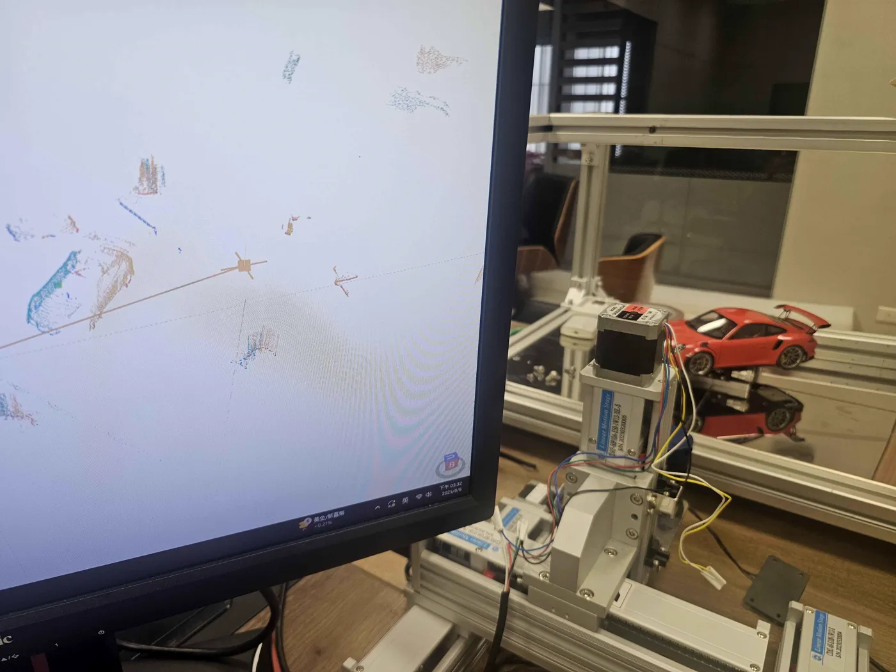
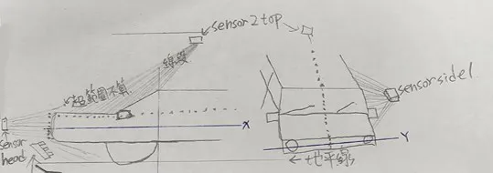
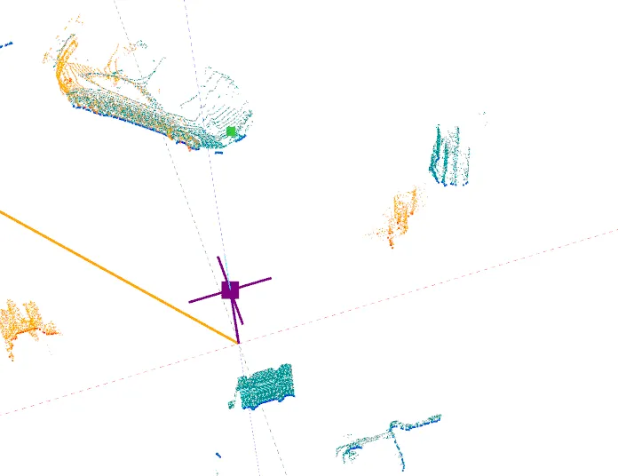
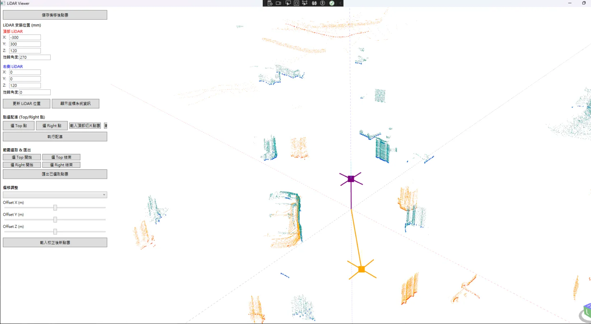
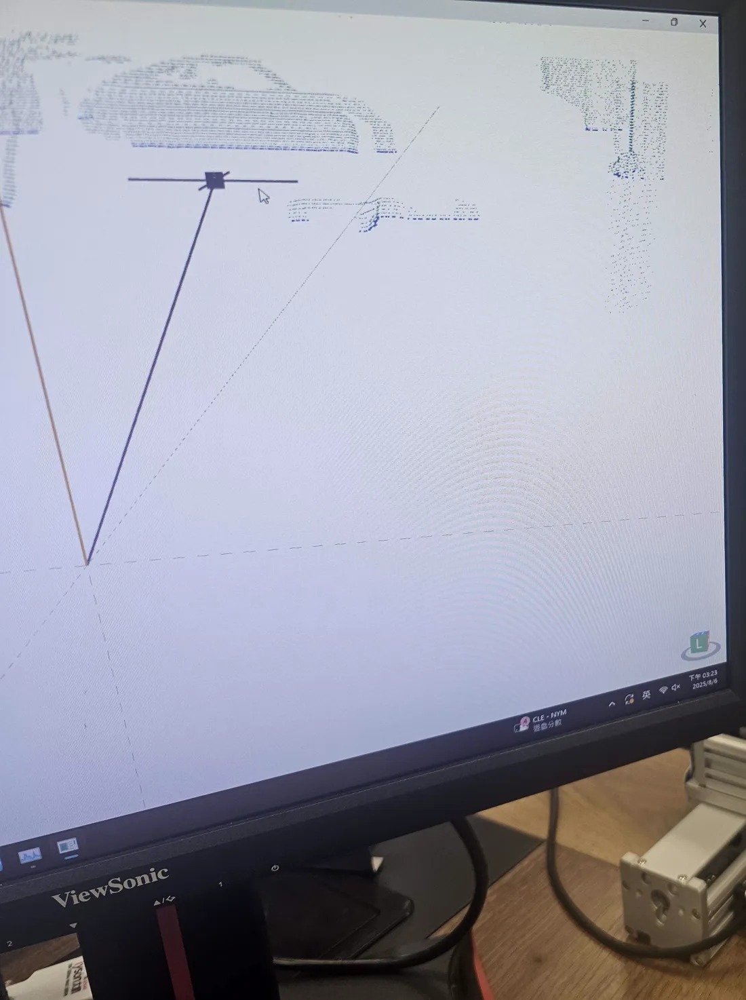
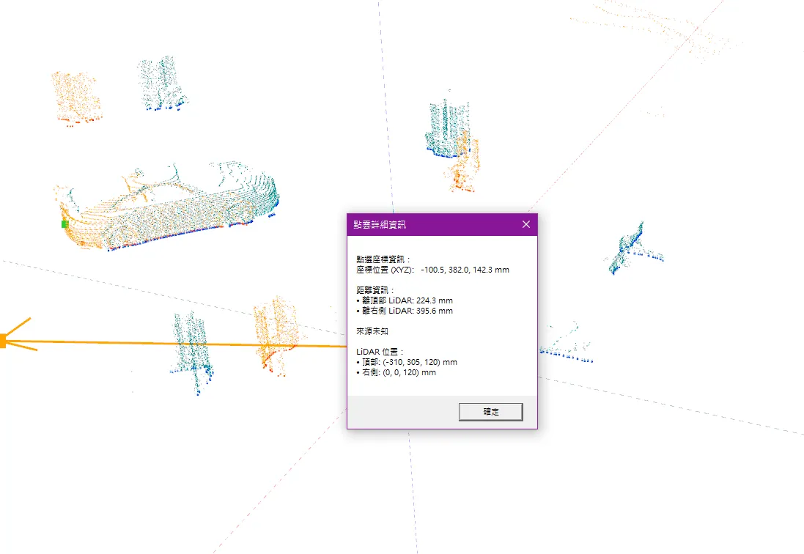
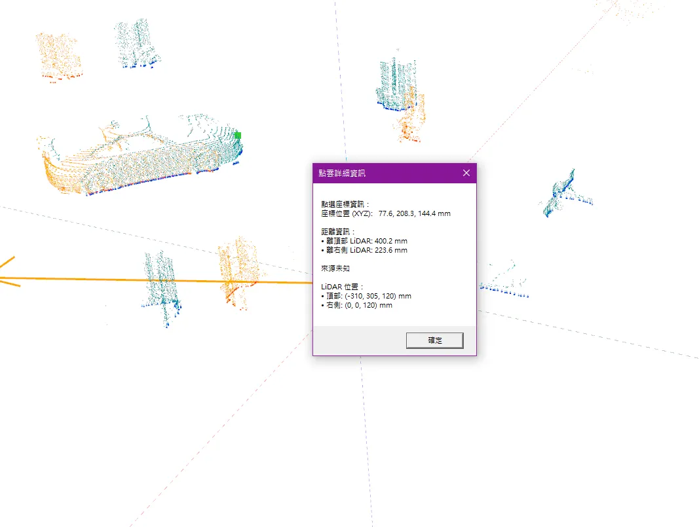
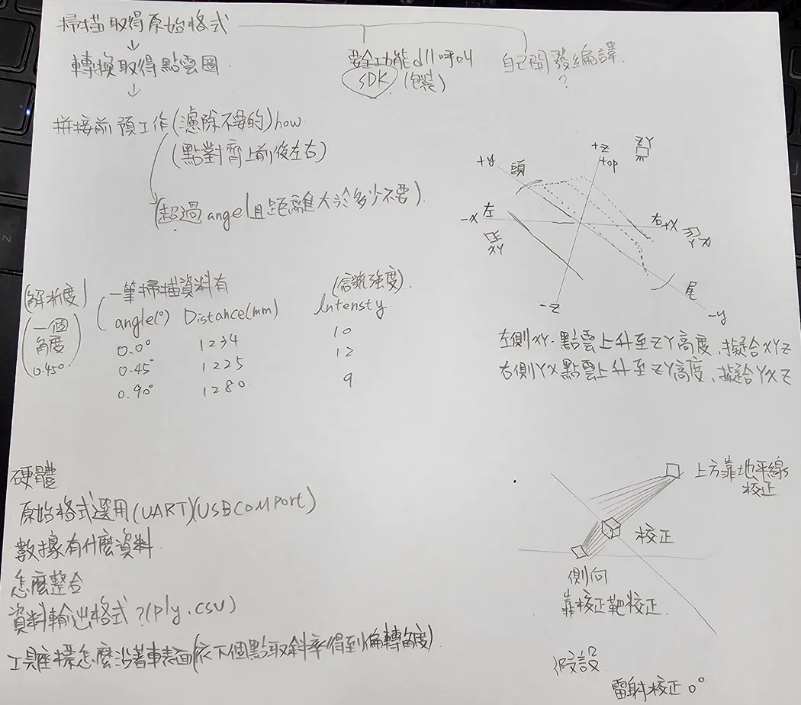

用 2D 線雷射，掃出整台車的 3D 點雲
機械手臂洗車系統的掃描端：從一圈角度與距離，到手臂的噴塗姿態。
洗車的手臂要沿著車身噴，得先知道這台車長什麼樣子。這個專案不買 3D 雷射，改用便宜的 2D 線雷射加一支線性馬達，一層一層把車體輪廓堆出來，再整理成手臂能直接用的點與方向。

為什麼不直接買 3D 雷射
主管給的條件很明確：成本要壓低。所以問題變成，能不能用 2D 的東西做出 3D 的結果。
直覺的做法：3D 雷射
- 一顆就能拿到整片點雲，軟體最省事
- 單價高，左右加上方至少要三顆
- 洗車環境有水霧與髒污，壞了更換成本也高
這個專案的做法：2D 線雷射加一支軸
- 2D 雷射一圈只給一個平面上的「角度、距離」
- 把雷射裝在線性馬達上，每抬升 2 mm 掃一次
- 缺的那一個維度由馬達位置補上，逐層堆成 3D
- 代價是掃描要花時間，而且座標換算要自己寫
硬體怎麼擺
目標是重建汽車的外部輪廓。側面與上方看到的東西不一樣，所以雷射分兩種擺法。
| 位置 | 數量 | 掃描方向 | 拿到的資料 | 涵蓋範圍 |
|---|---|---|---|---|
| 車輛左右兩側 | 2 | 橫向掃描，垂直車身 | XY 平面輪廓，沒有 Z | 車門到地面 |
| 車輛正上方 | 1 | 由天花板垂直向下 | YX 平面，轉 90° 後當成 YZ | 車頂、引擎蓋、擋風玻璃 |
雷射型號是 YDLIDAR X2L，量測範圍約 0.1 到 8 公尺。從實測檔案看，它一圈大約 220 到 230 個點，角度間隔約 1.5°，所以我每一層連續存 7 圈再合併，讓輪廓密一點。
手臂端的條件也會回頭影響掃描：現場是左右各一支六軸手臂，噴塗工具長 1000 mm，也就是 TCP 在法蘭前方 1000 mm，兩支手臂以車體中線對稱分工。細節放在手臂端與現場那一頁。

資料怎麼流
從雷射吐出來的一行文字，到手臂拿到的一個姿態，中間是五個步驟。
單層 2D 掃描
每顆雷射輸出
angle, range。距離為 0 的是沒量到，直接丟掉。逐層堆疊
線性馬達每走一步存一個檔，層數乘上步距就是這一層的高度。
轉世界座標
每顆雷射的位置與角度已知，極座標轉直角座標後旋轉、平移。
融合與整併
多顆雷射的點放進同一個座標系，再沿輪廓每 5 cm 整併成一個點。
姿態與路徑
相鄰兩點求出法線當噴槍方向，退縮後串成左右手臂的路徑。
點雲模擬器
下面這個不是預錄的動畫，是瀏覽器當場在算。參數化的七人座車體放在場地中央，三顆 2D 雷射各自發射射線、跟車體求交、加上雜訊與遺漏點，逐層掃完後融合，再規劃出兩支手臂的噴塗路徑。拖曳可旋轉，滾輪或雙指可縮放。
掃描
雷射位置
安裝誤差與標靶校正
噴塗路徑
檢視與匯出
模擬車體模式的三顆雷射配置，是我把當時的做法重新整理後的完整架構，數字是模擬結果，不是現場量測。「實測掃描資料」才是當時實驗台真的掃出來的點，換算方式與原本的 C# 程式完全相同。
可以試的幾件事
- 把「側面雷射前後錯開」拉到 0。兩顆雷射都在車身正中間，車頭與車尾那兩個面就掃不到，路徑也跟著斷掉。錯開成對角，兩顆雷射各看兩個面，這也是實驗時把模型車轉 45° 的原因。
- 勾選「右側雷射裝歪」。藍色點雲會跟其他兩色對不起來。按「用標靶校正」，程式用場地上已知位置的標靶解出雷射真正的位置與角度，點雲就回到正確位置。
- 把每層步距拉到 2 mm。這是當時實驗的設定。點數會超過顯示上限，模擬器會等比例下取樣並告訴你比例。
- 打開「兩點量測」。在點雲上點兩下得到距離，例如量車頭那兩根標靶之間是不是 2500 mm。
模擬器裡的物理設定
- 車體是用數學式描述的七人座輪廓，長 5.0 m、寬 1.9 m、高 1.9 m，含四個輪胎，射線用步進加二分法求交點。
- 側面雷射的掃描面是水平的，沿垂直軸由 100 mm 掃到 2000 mm。天花板雷射的掃描面轉成 YZ 切面，沿車長方向移動。
- 量測範圍 0.12 到 8 m，超出就沒有回波。雜訊加在距離方向，遺漏點隨機丟棄。
- 場地四角有四根半徑 60 mm 的校正標靶，位置已知。
演算法與程式
以下 C# 片段節錄自當時的點雲檢視程式（WPF 加 HelixToolkit），註解是整理時補上的。
座標轉換
雷射只知道「我在幾度的方向量到多遠」。先把極座標換成雷射自己的直角座標，再依安裝角旋轉，最後加上安裝位置，就進到世界座標。
每顆雷射的位置與角度做成畫面上可以改的欄位，現場量完尺寸填進去，點雲立刻重算。
MainWindow.xaml.cs
// 每顆雷射的安裝位置（公尺）與旋轉角 private Vector3D topLidarPosition = new(-0.310, 0.305, 0.12); private Vector3D rightLidarPosition = new(0, 0, 0.12); private double topLidarRotationDeg = 270.0; private double rightLidarRotationDeg = 0.0; foreach (var (ang, rng) in raw) { double rad = ang * Math.PI / 180.0; double r = rng / 1000.0; // mm 轉 m double x0 = r * Math.Sin(rad); // 極座標轉直角座標 double y0 = -r * Math.Cos(rad); double x1 = x0 * Math.Cos(rot) - y0 * Math.Sin(rot); // 依安裝角旋轉 double y1 = x0 * Math.Sin(rot) + y0 * Math.Cos(rot); res.Add(new Point3D( rightLidarPosition.X + x1, // 加上安裝位置 rightLidarPosition.Y + y1, rightLidarPosition.Z)); }
逐層堆疊
線性馬達每抬升 2 mm 存一個 CSV，檔名就是層數。程式從第 0 層開始一路讀到檔案不存在為止，每讀一層就把高度加上一個步距。
2D 雷射本來沒有的那個維度，就是這樣補出來的。
MainWindow.xaml.cs
private const double SliceStepHeight = 0.002; // 每層 2 mm double currentZ = 0.0; int layer = 0; while (true) { string file = layer == 0 ? Path.Combine(lidarDir, "right_lidar.csv") : Path.Combine(lidarDir, $"{layer}.csv"); if (!File.Exists(file)) break; var points = LoadRightLidarWithOffset(file, currentZ); rightSliceLayers.Add(points); currentZ += SliceStepHeight; // 下一層 layer++; }
融合，以及只有一顆雷射時怎麼辦
正式配置是多顆雷射各掃各的，轉進同一個世界座標後直接合併成一份點雲。
實驗時手上只有一顆雷射，所以我把模型車向左轉 45° 掃一次、向右轉 45° 再掃一次，第二次的資料當成是「另一顆位置不同、角度差 270° 的雷射」掃到的，兩次的點雲就能在軟體裡拼起來。上方模擬器切到「實測掃描資料」看到的雙色點雲就是這樣來的。

兩點決定姿態
一個點只能告訴手臂「去哪裡」，卻不知道噴槍該怎麼轉。同一個切面上相鄰的兩個點可以連成一條切線，切線在切面內轉 90° 就是表面的法線，噴槍沿著法線對準車身，才能平行噴塗。
點雲本身有雜訊，直接拿相鄰原始點算，方向會亂跳。所以先沿輪廓把點每 5 cm 整併成一個，再用整併後的點求方向。
lidar-sim.js（本頁模擬器，節錄）
// seg：同一個切面上、已整併成每 5cm 一點的輪廓 function poses(seg, outward, off) { return seg.map((p, i) => { const a = seg[Math.max(0, i - 1)]; const b = seg[Math.min(seg.length - 1, i + 1)]; // 兩點給切線，切線在切面內轉 90 度就是法線 const tx = b[0] - a[0], tz = b[2] - a[2]; const len = Math.hypot(tx, tz) || 1; let n = [-tz / len, 0, tx / len]; // 法線一律朝車外 const o = outward(p); if (n[0] * o[0] + n[2] * o[2] < 0) n = [-n[0], 0, -n[2]]; return { n, tcp: p.map((v, k) => v + n[k] * off), // 退縮 flange: p.map((v, k) => v + n[k] * (off + 1.0)), // 工具 1000 mm }; }); }
路徑規則
有了每個點的姿態，還要決定手臂怎麼走。這些規則是配合手臂端的條件整理出來的，模擬器的路徑就是照這幾條產生。
- 以車體中線對稱切半。左手臂負責左半邊，右手臂負責右半邊。
- 順序是車頭、車頂、車尾，最後才是側面。沿車長方向取切面，一趟就能從車頭翻過車頂走到車尾，手臂路徑是連續的。
- 點整併成 5 cm 一個切面。把雜訊平均掉，也讓姿態變化平順。
- 取到的線段向外退縮 5 到 10 cm。TCP 不貼著車身走，留噴塗距離。
- 每一趟前後各留 500 mm 預退。手臂先沿法線退開再移到下一趟，不會擦到車。
- 工具有下限高度。太低的點不排進路徑，避免工具或法蘭撞到地面設備。
實測結果
實驗台用的是一台模型車。雷射離車大約 20 到 30 公分，一次掃 35 層，共 70 mm 高。




怎麼知道點雲是對的
點雲看起來像一台車，不代表尺寸正確。因為每個點的 XYZ 都有，我在點雲上點兩個點算出距離，再拿尺去量實物上同一段，兩個數字對得起來，才表示虛擬空間與實際空間是匹配的。
這個檢查同時驗證了三件事：雷射位置填得對不對、旋轉角對不對、每層步距對不對。
放在這一頁的實測資料
模擬器的「實測掃描資料」用的是其中一組兩次 45° 掃描：共 69 層、約 2.6 萬個點，只保留距離雷射 600 mm 以內的部分，所以檔案很小。四個角落的點群是實驗台的鋁擠立柱。
當時沒做完的，現在補上
回頭看當時的程式，有一個地方是先求有：兩份點雲的對齊只算了平移。
當時：只對重心，不轉角度
選三組以上對應點，把兩邊的重心對在一起。雷射只要裝歪一點點，遠處的點就會差很多，只靠平移補不回來。
public static Matrix4x4 SolveRigidTransform( List<Vector3> src, List<Vector3> dst) { var srcC = Average(src); var dstC = Average(dst); // 省略 SVD var T = Matrix4x4.Identity; T.Translation = dstC - srcC; return T; }
現在：Kabsch 剛體解，旋轉加平移
高度已經由線性馬達決定，所以對齊是平面上的旋轉加平移。這時共變異矩陣的 SVD 解可以化簡成一個 atan2，不需要矩陣函式庫。
// 求 R、t 使 dst ≈ R·src + t function kabsch2D(src, dst) { const [ax, ay] = centroid(src); const [bx, by] = centroid(dst); let dot = 0, cross = 0; src.forEach((p, i) => { const px = p[0] - ax, py = p[1] - ay; const qx = dst[i][0] - bx, qy = dst[i][1] - by; dot += px * qx + py * qy; cross += px * qy - py * qx; }); const rot = Math.atan2(cross, dot); const c = Math.cos(rot), s = Math.sin(rot); return { rot, tx: bx - (c * ax - s * ay), ty: by - (s * ax + c * ay) }; }
用在哪裡：標靶校正
模擬器的「用標靶校正」就是用這個函式。雷射看到場地上位置已知的標靶，拿標靶在雷射座標裡的位置去對世界座標裡的位置，就能求出雷射實際的安裝位置與角度，不必靠人工一顆一顆量。
在模擬器裡把右側雷射故意裝歪 3°、位移 70 與 50 mm，校正解出來的結果是 2.99°、70 與 49 mm。
右邊是當時的規劃筆記，裡面已經寫到「靠校正靶校正」，只是程式沒有做到這一步。

限制與下一步
- 玻璃與深色車漆。2D 三角測距雷射遇到透明或吸光的表面容易沒有回波，模擬器用隨機遺漏點近似，實車上會集中在車窗，需要靠相鄰切面補點。
- 掃描時間。2 mm 一層、掃到 2 公尺高要 950 層。實際上線應該依手臂需要的 5 cm 整併尺度把步距放大，模擬器可以直接比較不同步距的結果。
- 姿態只用切面內的兩點。遇到同時往兩個方向彎的曲面，法線會少一個方向的傾斜。下一步是用鄰近切面的點擬合局部平面。
- 車輪與照後鏡。目前路徑直接沿外輪廓走，凸出物與凹陷處還沒有分開處理。
常見問題
為什麼用 2D 雷射而不是 3D 雷射？
專案有成本限制。2D 的 YDLIDAR X2L 搭配線性馬達，每抬升 2 mm 掃一圈，把一層一層的 2D 輪廓堆疊成 3D 點雲，硬體成本低很多。
你在這個專案負責什麼？
掃描端的軟體：雷射資料讀取、座標轉換、逐層堆疊與點雲融合、點選量測與匯出，以及把點雲整理成機械手臂可以用的位點與姿態。
模擬器是真的在算嗎？
是。它對參數化車體做射線求交，加上量測雜訊與遺漏點，逐層掃描後轉世界座標融合，再做 5 cm 整併與兩點求法線產生路徑。點雲與路徑都可以匯出成 CSV 或 PLY，用其他軟體打開檢查。